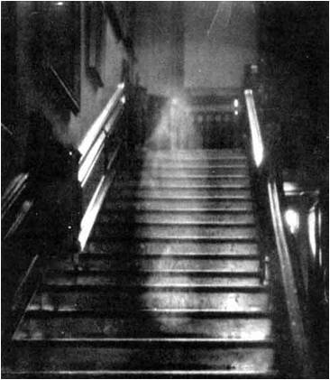

White Ladies
A White Lady is a type of female ghost reportedly seen in rural areas and associated with some local legend of tragedy. White Lady legends are found around the world. Common to many of them is the theme of losing or being betrayed by a husband or fiancé. They are often associated with an individual family line or said to be a harbinger of death similar to a banshee.White Ladies are popular ghost story topics in the Philippines. Along with other mythological creatures and ghostly beings like the Manananggal, Tiyanak, Kapre, Wak-Wak, and Tikbalang, White Ladies are often used to convey horror and mystery to young children for storytelling. Sightings of White Ladies are common around the country, and usually every town and barrio has its own "White Lady" story.